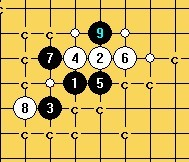

请教斜月8手结论
首页
茗弈阁
#1 请教斜月8手结论 作者：颐之X 发表时间：2011-4-8 23:52:34
=======上图对应的爱五子棋谱代码如下，以便你拆解：========
h8i9g7h9i8j9g9f7
======================================================经过简单拆解之后，结论是除了这个8之外，其他8必败
请教这个8的结论。
请给出最佳应手参考。
#2 Re:请教斜月8手结论 作者：极地剑客 发表时间：2011-4-9 4:04:12
果断i10.........
#3 Re:请教斜月8手结论 作者：裁决殿雪月 发表时间：2011-4-9 11:19:34
=======上图对应的爱五子棋谱代码如下，以便你拆解：========
h8i9g7h9i8j9g9f7f8g8i10
======================================================?
#4 Re:请教斜月8手结论 作者：岑小鱼 发表时间：2011-4-9 13:35:36
黑i10后白无法抢占F8。也无法限制黑方走F8.所以黑方没必要先走.
直接i10看情况继续控制。
#5 Re:请教斜月8手结论 作者：踵酃 发表时间：2011-4-10 22:10:42
这个8，结论初步可以判定为黑优。
#6 Re:请教斜月8手结论 作者：好学 发表时间：2011-4-11 12:26:16
此局面黑棋优势
#7 Re:请教斜月8手结论 作者：茗弈宽容 发表时间：2011-4-11 14:02:19
=======上图对应的爱五子棋谱代码如下，以便你拆解：========
h8i9g7h9i8j9g9f7i10g8k9
======================================================这样的发展黑很舒服。
#8 Re:请教斜月8手结论 作者：gerbo 发表时间：2011-4-11 17:23:37
=======上图对应的爱五子棋谱代码如下，以便你拆解：========
h8i9g7h9i8j9g9f7i10f10
======================================================追求的就是地摊，第二个难点。其他点都太弱
翻阅了下现有的棋谱，发现白很多白8都写得败，不过没过程。
恭祝自己驻守论坛5周年，留贴纪念：
oooO K┏━┓ L Oooo
( 踩)→┃五┃ ←(踩 )
\ ( →┃年┃ ← ) /
\_)J┗━┛ I(_/
［此帖子已被 gerbo 在 2011-4-11 17:32:06 编辑过］
［ 逆刃 于 2011-4-11 19:32:46 时花20金币送鲜花一朵］
#9 Re:请教斜月8手结论 作者：岑小鱼 发表时间：2011-4-11 18:46:57
e6有潜力不？
#10 Re:Re:请教斜月8手结论 作者：屏蔽 发表时间：2011-4-11 19:04:27
引用：
原文由 岑小鱼 发表于 2011-4-11 18:46:57 :
e6有潜力不？
有且只有。
#11 Re:请教斜月8手结论 作者：茗弈宽容 发表时间：2011-4-11 19:06:24
我还是会这么下：
=======上图对应的爱五子棋谱代码如下，以便你拆解：========
h8i9g7h9i8j9g9f7i10f10k9
======================================================
#12 Re:Re:Re:请教斜月8手结论 作者：屏蔽 发表时间：2011-4-11 19:42:24
引用：
原文由 屏蔽 发表于 2011-4-11 19:04:27 :
有且只有。
否定自己的感觉真不好。
未验证。所以大家和我一起念：愿原力与你同在。
 w8d10.rar
w8d10.rar［ 茗弈小刀 于 2011-4-12 11:21:16 时奖励此帖[金币加 100 威望加1］
#13 Re:请教斜月8手结论 作者：屏蔽 发表时间：2011-4-11 19:48:46
P.S. 因为是从更庞大的谱里扒出的一个分支，所以有些同型因为拆解顺序问题未能包括。确有解决不了的，欢迎发帖讨论…… ［ 岑小鱼 于 2011-4-11 21:02:25 时花20金币送鲜花一朵］
#14 Re:请教斜月8手结论 作者：茗弈宽容 发表时间：2011-4-12 11:21:00
强大！
#15 Re:请教斜月8手结论 作者：侯军学棋 发表时间：2011-4-12 13:37:12
这几个10不知道怎么杀
#16 Re:请教斜月8手结论 作者：屏蔽 发表时间：2011-4-12 14:26:59
=======上图对应的爱五子棋谱代码如下，以便你拆解：========
h8i9g7h9i8j9g9f7i10h10f10e11j8
======================================================
=======上图对应的爱五子棋谱代码如下，以便你拆解：========
h8i9g7h9i8j9g9f7i10h10f10i7e11d12g11j8h6
======================================================求胜法：
=======上图对应的爱五子棋谱代码如下，以便你拆解：========
h8i9g7h9i8j9g9f7i10i7
======================================================
=======上图对应的爱五子棋谱代码如下，以便你拆解：========
h8i9g7h9i8j9g9f7i10e6d5g8
======================================================
#17 Re:Re:请教斜月8手结论 作者：岑小鱼 发表时间：2011-4-12 21:06:54
=======上图对应的爱五子棋谱代码如下，以便你拆解：========
h8i9g7h9i8j9g9f7i10e6d5g8f8e7f10e11k9
======================================================构思.....
#18 Re:请教斜月8手结论 作者：gerbo 发表时间：2011-4-12 23:26:11
=======上图对应的爱五子棋谱代码如下，以便你拆解：========
h8i9g7h9i8j9g9f7i10e6d5g8e5
======================================================
=======上图对应的爱五子棋谱代码如下，以便你拆解：========
h8i9g7h9i8j9g9f7i10i7f8
====================================================== 呵呵，先给这两步吧。。。
#19 Re:请教斜月8手结论 作者：屏蔽 发表时间：2011-4-13 6:41:11
继续表示不会。
麻烦啊麻烦，要个谱还只给前两步。
#20 Re:请教斜月8手结论 作者：屏蔽 发表时间：2011-4-13 6:52:24
=======上图对应的爱五子棋谱代码如下，以便你拆解：========
h8i9g7h9i8j9g9f7i10e6d5g8e5f6
======================================================
=======上图对应的爱五子棋谱代码如下，以便你拆解：========
h8i9g7h9i8j9g9f7i10i7f8g8
======================================================
#21 Re:请教斜月8手结论 作者：侯军学棋 发表时间：2011-4-13 11:36:35
分支.rar
#22 Re:请教斜月8手结论 作者：侯军学棋 发表时间：2011-4-13 12:01:39
08版扫描的 没检验分支.rar［ 茗弈小刀 于 2011-4-13 13:01:07 时奖励此帖[金币加 100 威望加1］
#23 Re:请教斜月8手结论 作者：屏蔽 发表时间：2011-4-13 13:07:06
i128.rar
姑且算个阶段性小结……我所要找的分支在侯军学棋的棋谱里不详细，不过受到点启发还是搞定了，顺便再搞定另一个10……原来强攻也可以。
=======上图对应的爱五子棋谱代码如下，以便你拆解：========
h8i9g7h9i8j9g9f7i10g8
======================================================剩下直接挡三三的防守，以及冲四后再挡三三的防守。
［ 岑小鱼 于 2011-4-13 19:17:54 时花20金币送鲜花一朵］
#24 Re:请教斜月8手结论 作者：岑小鱼 发表时间：2011-4-13 19:18:09
强悍....
#25 Re:请教斜月8手结论 作者：潇洒 发表时间：2011-4-13 23:11:33
=======上图对应的爱五子棋谱代码如下，以便你拆解：========
h8i9g7h9i8j9g9f7i10g8k9i7
======================================================此12难杀...
#26 Re:请教斜月8手结论 作者：潇洒 发表时间：2011-4-13 23:12:48
=======上图对应的爱五子棋谱代码如下，以便你拆解：========
h8i9g7h9i8j9g9f7i10g8f10e11k9j10j8i7k11k10
======================================================这个18能杀吗？
#27 Re:请教斜月8手结论 作者：屏蔽 发表时间：2011-4-14 12:10:28
i128o.part01.rar
i128o.part02.rar
先冲四解决，白10填三三唯一。
潇洒那个第一个图应该有希望，第二个图感觉比较困难。